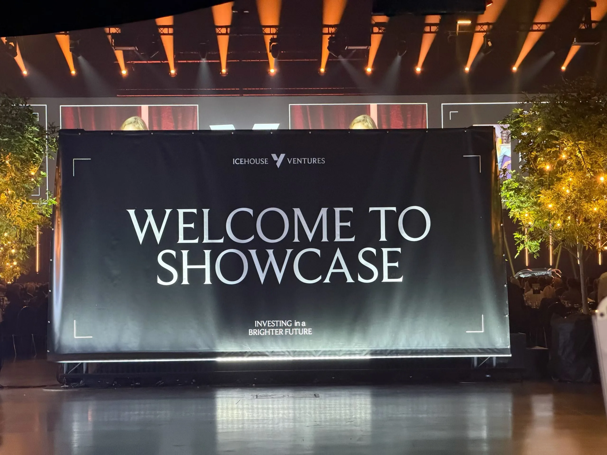
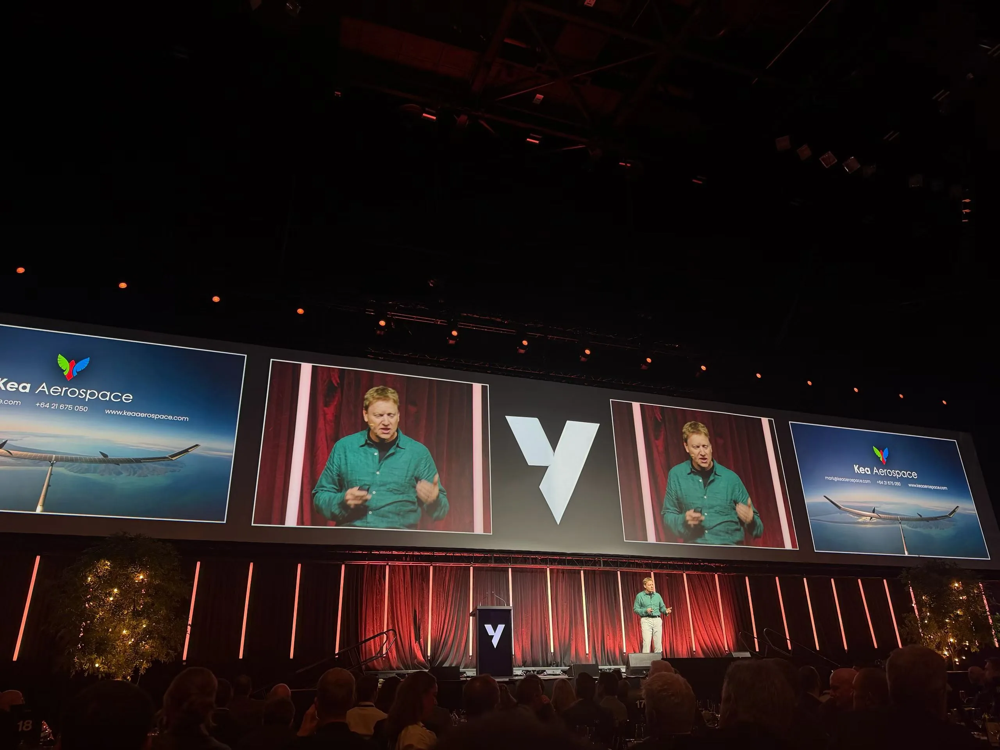
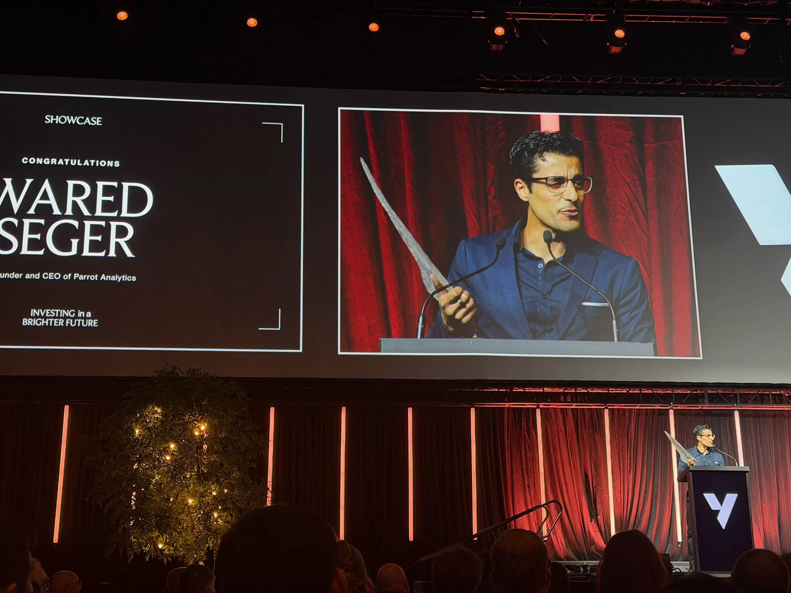
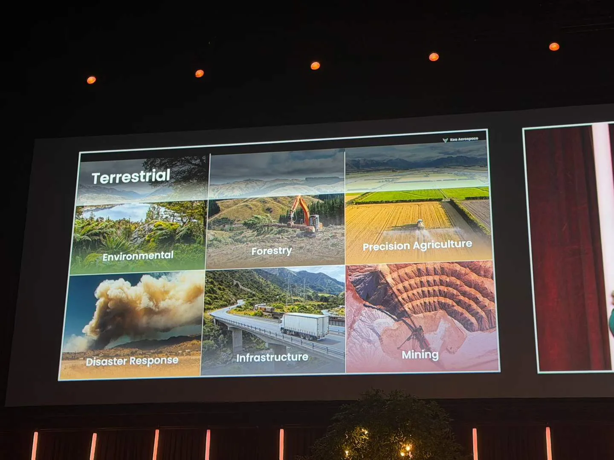
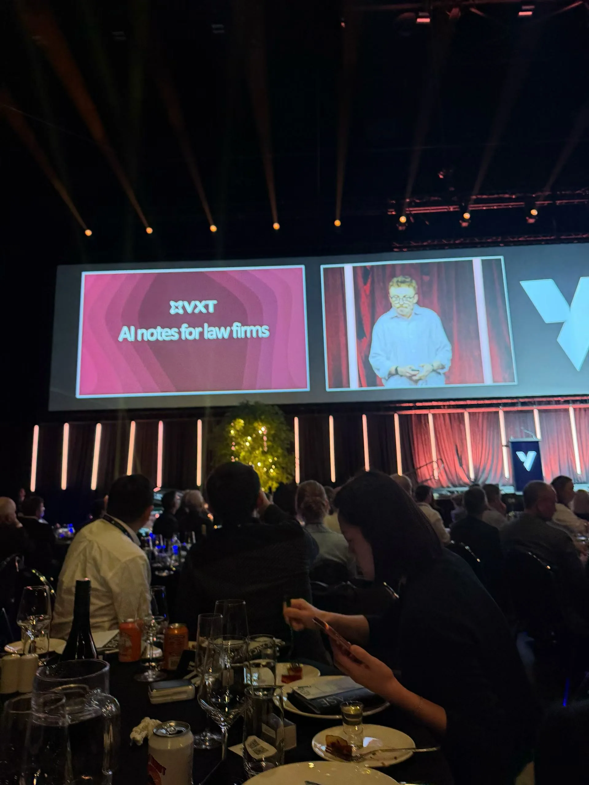
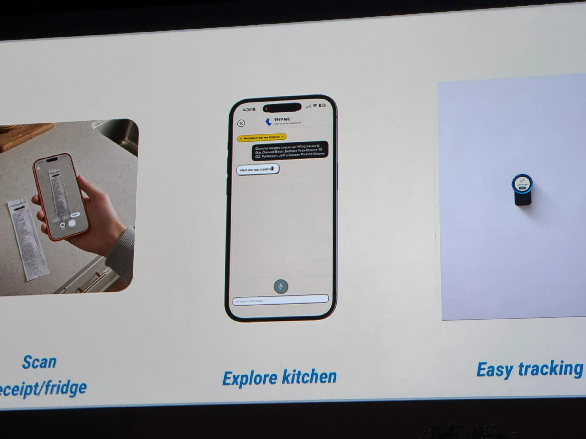
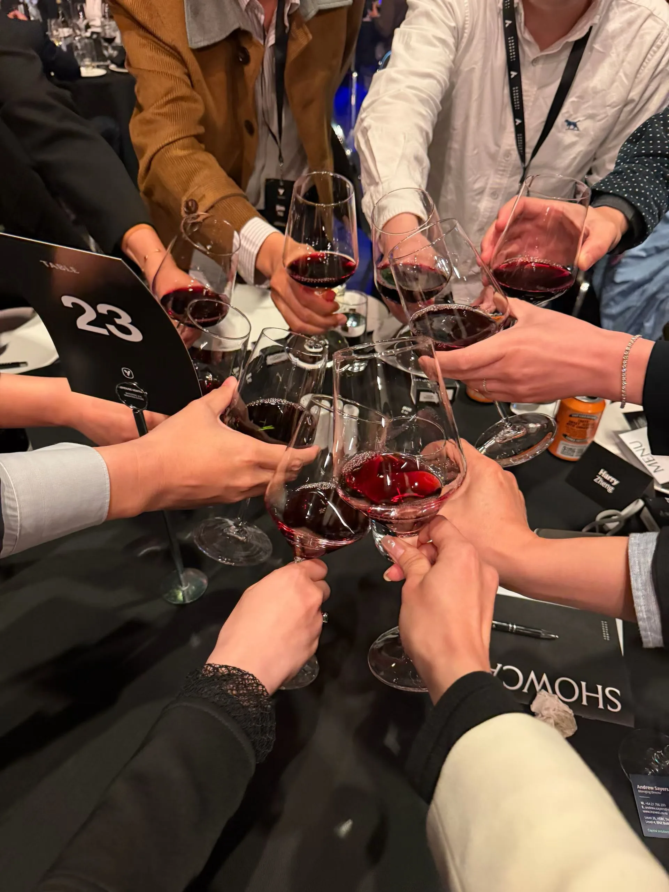
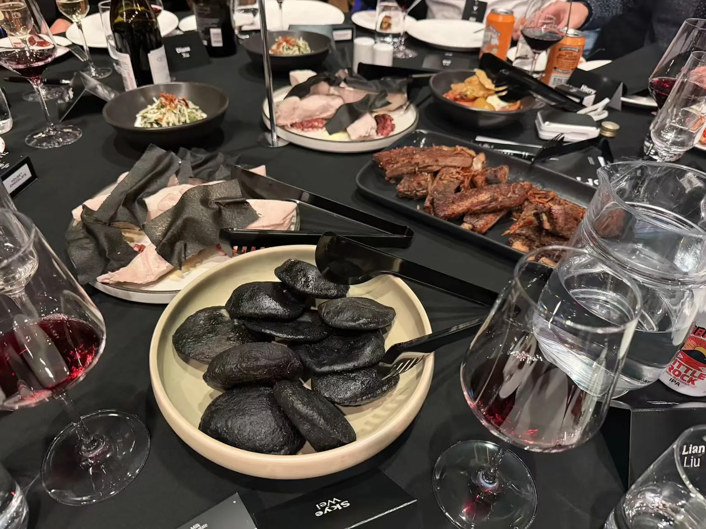
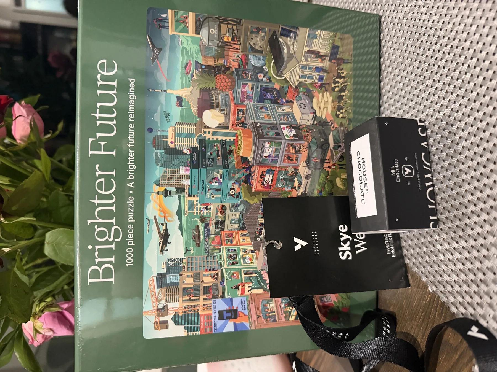

2026 年 8 月 27 日晚，NewBee AI Club 组织会员参加 Icehouse Ventures 年度 Showcase。俱乐部很荣幸有两桌会员到场，在同一个晚上集中看到来自不同领域的创业项目，也近距离感受新西兰投资生态的活力。
- 20个项目集中亮相
- 1,000+投资人与潜在投资人
- 2 桌NewBee AI Club 会员
- 约 200名高中生在二层参与
会员活动日的价值，不只是参加一场大型活动，而是一起看、一起问、一起判断：哪些技术正在走向真实市场，哪些机会值得继续追踪。
20 个项目，一晚看见创新的广度
现场展示覆盖航空航天、环境与农业应用、专业服务、消费体验和 AI 产品等不同方向。对会员来说，这是一场高密度的市场观察：既能看见技术如何被包装成产品，也能观察创业者如何讲清问题、价值与商业路径。






1000+ 投资人，与真实市场面对面
超过一千位投资人与潜在投资人汇聚现场，让项目展示不只停留在“讲一个好故事”，还要接受市场、资本和同行的共同检验。会员们在两桌之间交流观察，也把不同专业背景带进了对项目的判断。



约 200 名高中生：创新教育正在提前
活动二层还有约 200 名高中生参与。年轻人更早接触创业者、项目展示与投资逻辑，说明创新教育正在从大学和职场继续向前延伸。对一个关注 AI 学习与实践的社群来说，这也是值得长期观察的变化：未来的创造者，正在更早进入现场。
NewBee AI Club 希望通过会员活动日，把会员带到真实企业、资本与创新现场。不是旁观趋势，而是在共同经历中形成自己的问题、判断与连接。
本活动由 Icehouse Ventures 主办，NewBee AI Club 组织会员共同参加；页面照片由俱乐部会员提供。